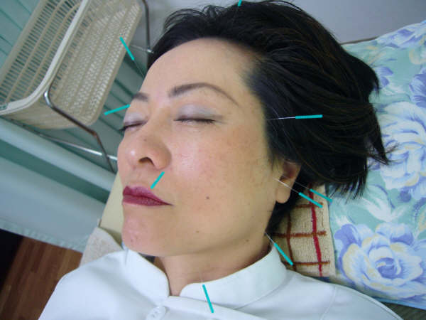
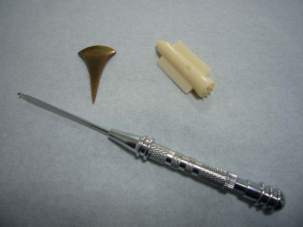

美顔鍼とは顔面・頭皮のツボに鍼を打つことにより皮膚や筋肉に作用し、血液やリンパの流れを 促進させ、細胞内の老廃物を排除させ栄養を送り込むことができます。 汗腺や皮脂腺の分泌も調整され、皮膚に潤いと血色、弾力を与え、乾燥肌や顔色の くすみ、シミ、小ジワ、吹き出物等の改善、さらに皮膚のたるみや引き締め効果により リフトアップ・小顔効果も期待できます。 美顔鍼では極めて細い鍼を使用しますが、顔面の血管は非常に細い為、稀に内出血等する場合が あります。この事を御了承頂いた上で施術させていただきます。

小児鍼とは先の丸い鍼や平らな形の鍼を使って全身を摩擦したりツボに刺激を与えたりするものです。 鍼で皮膚を刺激する事により、内臓や脳の働きが活性化し免疫力を高め、自律神経やホルモンの調整を行います。 疳の虫・夜泣き・キーキー声を出す・よく泣く・不機嫌・噛み付く・ 夜尿症・風邪を引きやすい・よく熱を出す・ひきつけ・食欲不振・ 下痢・便秘・よく腹痛を起こす・アレルギー疾患・喘息・扁桃腺炎 などの症状に効果があります。 副作用の心配はほとんどありません。(まれに眠くなる場合があります) 治療時間は５～１０分です。週に１～２回を３ヶ月以上続ける頃から効果が現れます。 体質改善には１年以上が望ましいです。また、年齢は新生児から治療できます。 早い時期に始めるほど高い効果が得られます。
